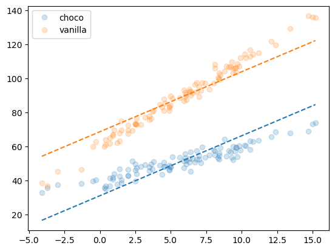
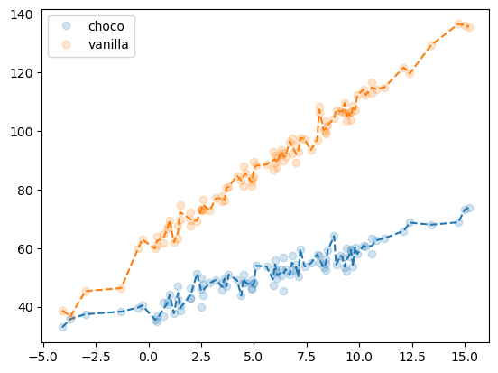

의사결정나무는 교호작용텀을 고려하지 않아도 알아서 잘 잡아준다.
1. 강의영상
https://youtu.be/playlist?list=PLQqh36zP38-xIhMfXInEIhFMvFPXeM3Tg&si=PFDKhFupDaWnuVsW
2. Imports
3. Data
np.random.seed(43052)
temp = pd.read_csv('https://raw.githubusercontent.com/guebin/DV2022/master/posts/temp.csv').iloc[:,3].to_numpy()[:100]
temp.sort()
choco = 40 + temp * 2.0 + np.random.randn(100)*3
vanilla = 60 + temp * 5.0 + np.random.randn(100)*3
df1 = pd.DataFrame({'temp':temp,'sales':choco}).assign(type='choco')
df2 = pd.DataFrame({'temp':temp,'sales':vanilla}).assign(type='vanilla')
df_train = pd.concat([df1,df2])
df_train| temp | sales | type | |
|---|---|---|---|
| 0 | -4.1 | 32.950261 | choco |
| 1 | -3.7 | 35.852524 | choco |
| 2 | -3.0 | 37.428335 | choco |
| 3 | -1.3 | 38.323681 | choco |
| 4 | -0.5 | 39.713362 | choco |
| ... | ... | ... | ... |
| 95 | 12.4 | 119.708075 | vanilla |
| 96 | 13.4 | 129.300464 | vanilla |
| 97 | 14.7 | 136.596568 | vanilla |
| 98 | 15.0 | 136.213140 | vanilla |
| 99 | 15.2 | 135.595252 | vanilla |
200 rows × 3 columns
5. 분석
- 분석1: 선형회귀
# step1
X = pd.get_dummies(df_train[['temp','type']],drop_first=True)
y = df_train['sales']
# step2
predictr = sklearn.linear_model.LinearRegression()
# step3
predictr.fit(X,y)
# step4
df_train['sales_hat'] = predictr.predict(X)
#---#
f'train score = {predictr.score(X,y):.4f}''train score = 0.9250'plt.plot(df_train.temp[df_train.type=='choco'],df_train.sales[df_train.type=='choco'],'o',alpha=0.2,label='choco')
plt.plot(df_train.temp[df_train.type=='choco'],df_train.sales_hat[df_train.type=='choco'],'--',color='C0')
plt.plot(df_train.temp[df_train.type=='vanilla'],df_train.sales[df_train.type=='vanilla'],'o',alpha=0.2,label='vanilla')
plt.plot(df_train.temp[df_train.type=='vanilla'],df_train.sales_hat[df_train.type=='vanilla'],'--',color='C1')
plt.legend()<matplotlib.legend.Legend at 0x7f4deb0335e0>
–> 타입에 따른 기울기 차이를 고려하지 못하고 있다. underlying function 자체를 잘 못맞추고 있어 –> underfit
- 분석2
# step1
X = pd.get_dummies(df_train[['temp','type']],drop_first=True)
y = df_train['sales']
# step2
predictr = sklearn.tree.DecisionTreeRegressor()
# step3
predictr.fit(X,y)
# step4
df_train['sales_hat'] = predictr.predict(X)
#---#
f'train score = {predictr.score(X,y):.4f}''train score = 0.9964'plt.plot(df_train.temp[df_train.type=='choco'],df_train.sales[df_train.type=='choco'],'o',alpha=0.2,label='choco')
plt.plot(df_train.temp[df_train.type=='choco'],df_train.sales_hat[df_train.type=='choco'],'--',color='C0')
plt.plot(df_train.temp[df_train.type=='vanilla'],df_train.sales[df_train.type=='vanilla'],'o',alpha=0.2,label='vanilla')
plt.plot(df_train.temp[df_train.type=='vanilla'],df_train.sales_hat[df_train.type=='vanilla'],'--',color='C1')
plt.legend()<matplotlib.legend.Legend at 0x7f4de2d99090>
– 적합하는 선보다 오차를 더 따라가려는 경향을 보임. –> 오버핏
* 오버피팅에 대한 제 개념: 통계에서 “관측치 = 언더라잉 + 랜덤” 으로 볼 수 있다. 모형이 설명해야할 영역은 “언더라잉” 이다. 만약에 모형이 언더라잉을 잘 설명하지 못한다면 언더피팅이고, 주어진 모형이 언더라잉을 넘어 오차항까지 설명하고 있다면 오버피팅이다.
- 마음속의 underlying 을 간직한다 – 애매하죠?
- 그 underlying 보다 잘 맞추면 오버피팅이다.
- 내 마음속의 underlying 제대로 학습못하고 있다고 판단되면 모형미스 혹은 언더피팅이다.
이러한 논리로 인하면 위의 의사결정나무로 적합된 결과는 오버피팅이다. (그렇지만 언더피팅보단 나을지도?)
Note
언더피팅이다 - 모형의 표현력이 부족하다 - 맞춰야할 것을 제대로 못맞춘다. - 데이터의 특징을 잘 찾아내지 못한다.
오버피팅이다 - 모형의 표현력은 풍부하다 - 그런데 표현력이 너무 풍부해서 표현하지 말아야할 오차항도 표현한다. - 데이터의 특징만 잡는게 아니고 오차항의 특징까지 학습하고있다.
결론은 regression tree를 사용하면 interaction term까지 잡아낸다.